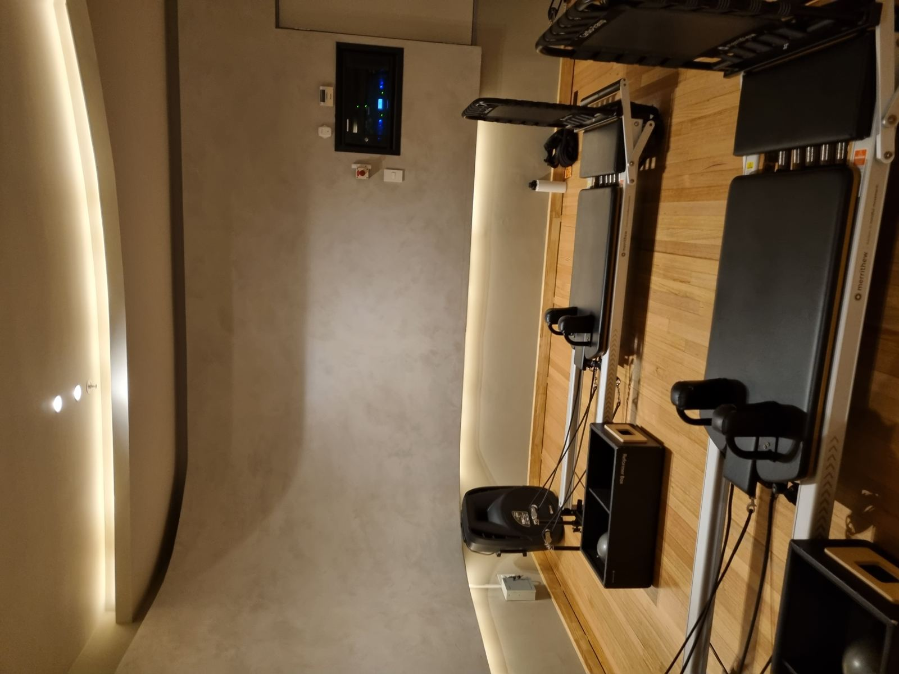
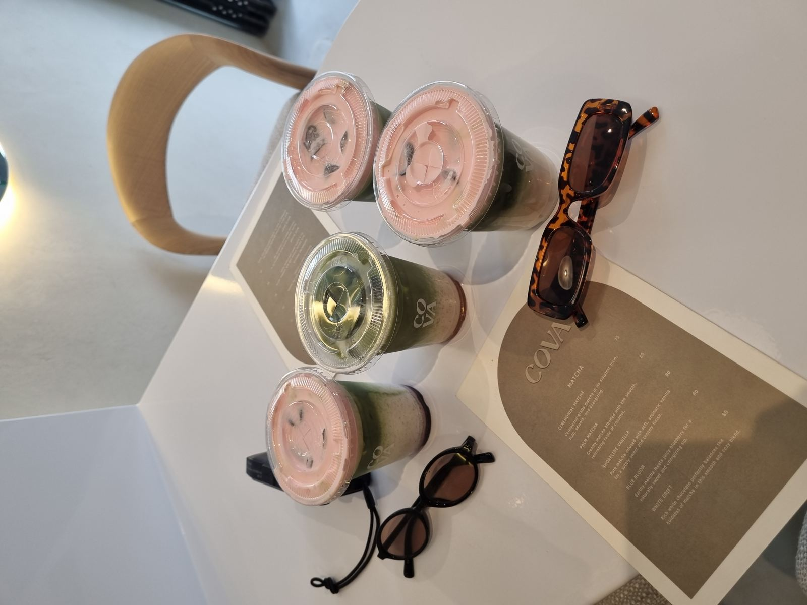
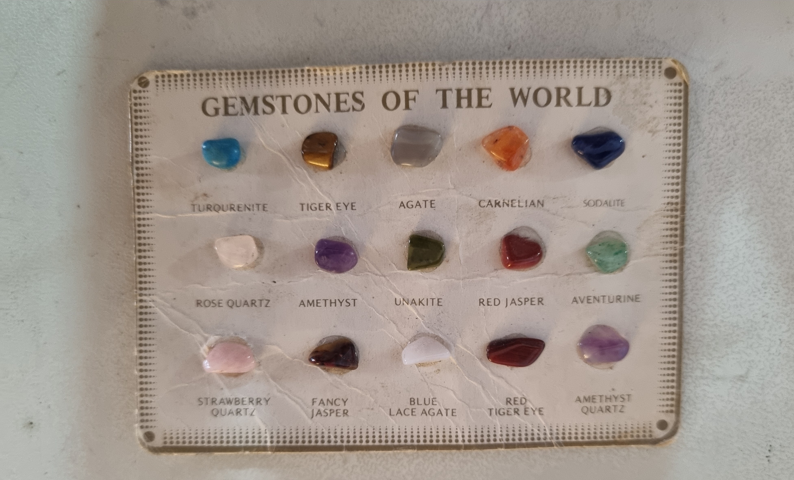
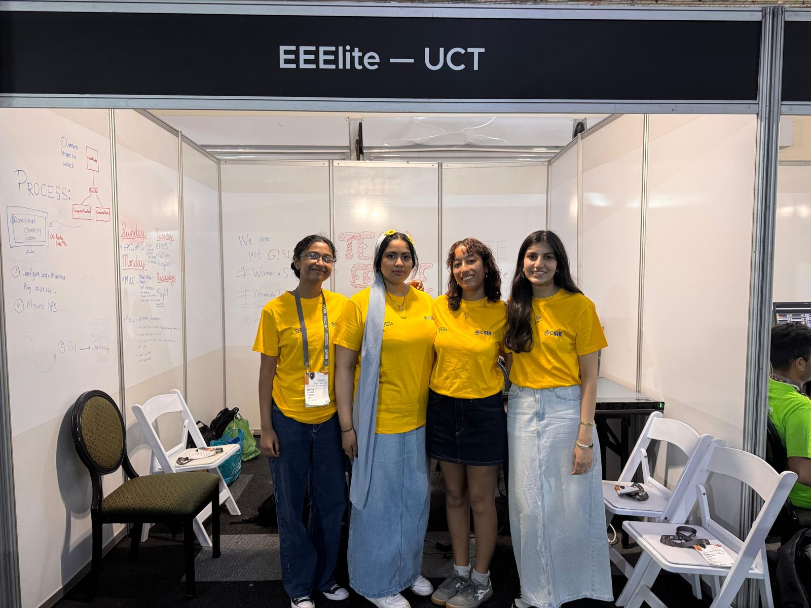

Engineer, tutor, orientation leader, self-proclaimed LinkedIn warrior
I'm passionate about coding, robotics, AI and renewable energy — and I love getting my hands dirty with the hardware side of things just as much as the theory. Over the last four years at UCT I've built development boards, soldered power subsystems onto veroboard, chased bugs in Simulink models, and helped a virtual “kitticopter” learn to fly (long story, see Projects).
Outside of coursework, I tutor Electronic Devices & Circuits and Embedded Systems, mentor first years, and have spent two years as an Orientation Leader — most recently as Head EBE Orientation Leader. I'm a fast learner, a strong communicator, and a firm believer that engineering is better (and more fun) with more women in the room.
I'm fluent in English and conversational in Turkish and Afrikaans, comfortable across Python, Java, C, MATLAB/Simulink, and I've dabbled in basic Ubuntu/Rocky cluster and VM setup for high-performance computing (more on that under Experience).
🔗 Certified LinkedIn warrior
I'll admit it — I actually enjoy keeping my LinkedIn updated. If you want the more “professional” version of my updates, achievements and questionable enthusiasm for circuit diagrams, that's where you'll find me.
Connect with me on LinkedInWhen I'm not soldering something
Balance matters to me just as much as the engineering does. You'll usually find me at Zumba or Pilates a few times a week — it's my reset button after a long day of debugging — and I'm a firm believer that no problem, academic or otherwise, can't be helped along by a good matcha. I genuinely love matcha; ask anyone who knows me and they'll confirm I have a “usual order.”
I'm just as happy outdoors as I am at a workbench — long walks in nature, beach days, and hunting for gemstones and crystals are some of my favourite ways to switch off. I also love learning about history and wandering through museums whenever I get the chance.
And of course, the girls from EEElite — my CHPC Student Cluster Competition team — deserve a mention here too. Competing (and making history) alongside them is one of my favourite university memories, on or off a circuit board.





